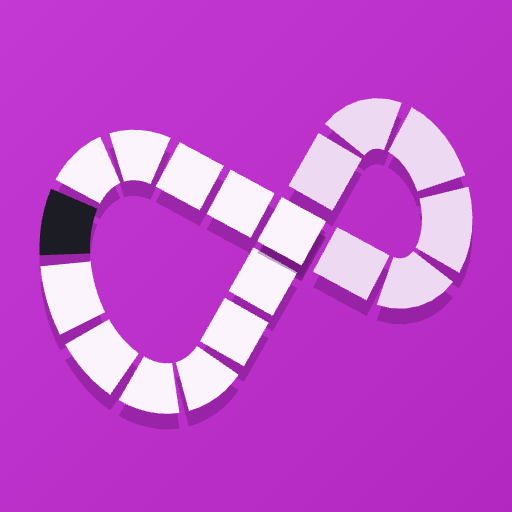
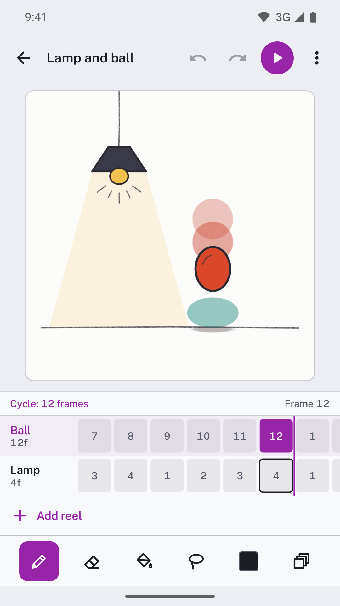
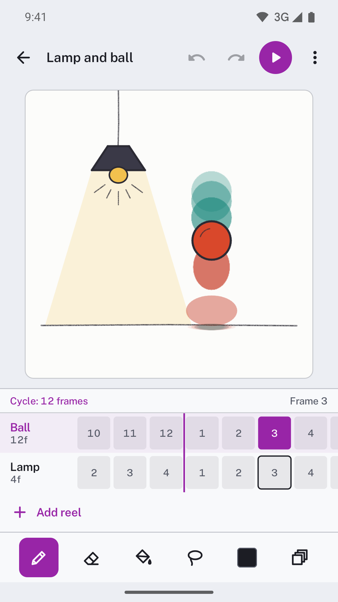
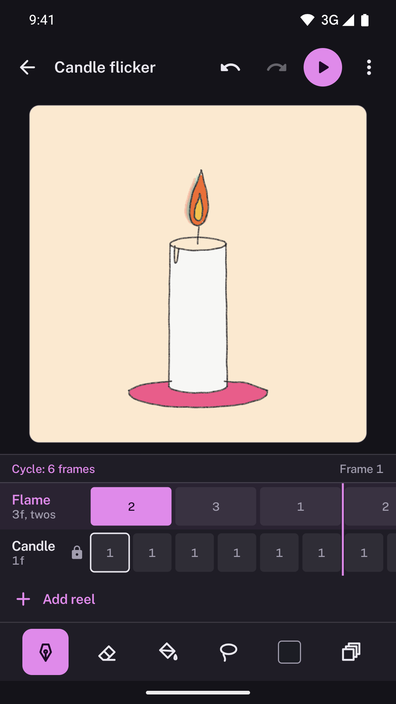
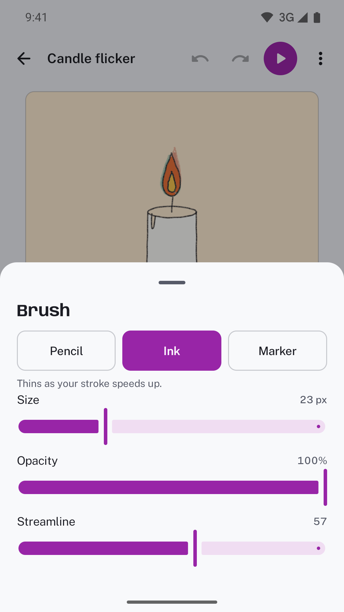
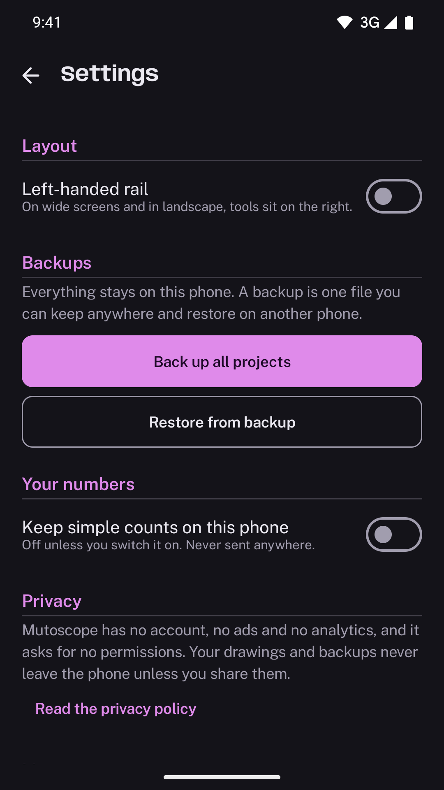

MutoscopeDraw frame by frame on reels that cycle against each other, then export GIF or MP4 with no watermark.
Get it on Google Play
Each layer is a reel with its own frame count, hold and offset. Put a 4-frame flicker over a 12-frame bounce and they realign every 12 frames. The orchid rule marks where, and a GIF of one cycle loops with no jump.



No sign-in and no permissions. Share a single project as a .mutoscope file, or back up every loop to one file and restore it on another phone.

INR 350 in India. One-time purchase. No ads, no subscription, no account. Works fully offline.